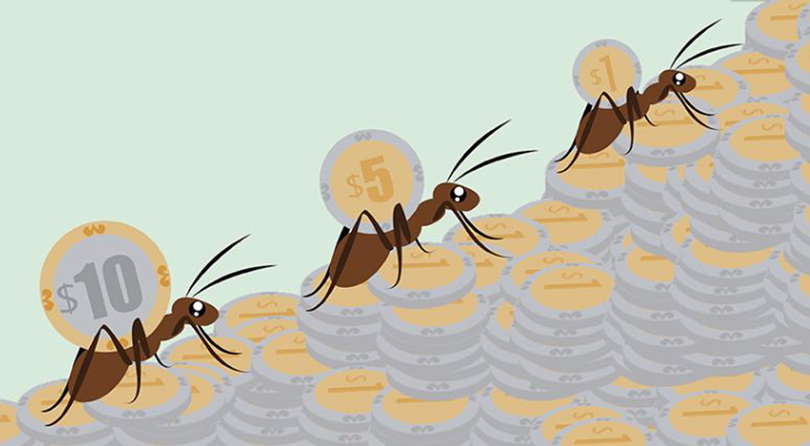

Los gastos hormiga son esos pequeños costes diarios que, aunque parecen ser nimios individualmente, tejen una red financiera significativa con el tiempo. Estas pequeñas fugas de dinero suelen pasar desapercibidas, camufladas en la rutina cotidiana y en la aparente insignificancia de sus montos.
Ejemplos cotidianos
- El café de todas las mañanas: Ese americano diario en la cafetería puede convertirse en una corriente constante de gastos.
- Compras impulsivas: Las pequeñas compras impulsivas, ya sea un snack rápido o una revista, pueden sumar más de lo que pensamos.
- Suscripciones olvidadas: Aquellas suscripciones a servicios que raramente utilizamos contribuyen a los gastos hormiga.
- Golosinas frecuentes: Los pequeños placeres, como golosinas y chocolates, a menudo se traducen en grandes gastos acumulativos.
Impacto silencioso en tus finanzas
Aunque un café o un snack ocasional pueden parecer inofensivos, su impacto a largo plazo es todo menos trivial. La acumulación silenciosa de estos gastos puede socavar la capacidad de ahorro y obstaculizar la construcción de una base financiera sólida.
¿Cómo te estan afectando?
- Reducción del presupuesto disponible: Los gastos hormiga disminuyen el dinero disponible para necesidades esenciales, como alimentos, vivienda y salud.
- Dificultad para alcanzar metas financieras: La suma constante de pequeños gastos dificulta el logro de metas financieras a largo plazo, como comprar una casa o ahorrar para la jubilación.
- Creación de hábitos financieras poco saludables: Estos gastos pueden fomentar hábitos financieros poco saludables, como la falta de control y la dependencia del crédito.
¡Evitalos a toda costa con estos consejos!
- Conciencia financiera: Estar consciente de los gastos diarios y evaluar su impacto a largo plazo es el primer paso para combatir los gastos hormiga.
- Presupuesto: Establecer límites claros para los gastos discrecionales ayuda a mantener el control sobre las finanzas personales.
- Priorización: Identificar y priorizar necesidades frente a deseos es esencial para evitar gastos innecesarios.
- Compras con lista: Ir de compras con una lista predefinida ayuda a evitar compras impulsivas.
- Cuestionar la necesidad: Antes de comprar, pregúntate a ti mismo: "¿Realmente lo necesito?"
- Buscar alternativas económicas: Explorar opciones más económicas sin comprometer la calidad puede ayudar a reducir gastos.
El control financiero va más allá de la gestión de números; es una herramienta para construir un futuro financiero sólido. No solo mejora la estabilidad a largo plazo, sino que también empodera la toma de decisiones financieras informadas y fomenta un enfoque prudente hacia el ahorro y la inversión.
Referencias de consulta
- Condusef contenido. (s. f.). https://www.condusef.gob.mx/?p=contenido&idc=1583&idcat=3
- La Protección Y Defensa De Los Usuarios De Servicios Financieros, C. N. P. (s. f.). ¡Cuida tu bolsillo de los gastos hormiga! gob.mx. https://www.gob.mx/condusef/articulos/cuida-tu-bolsillo-de-los-gastos-hormiga?idiom=es
- López, P. (2023, 6 octubre). ¿Qué son los gastos Hormiga, fantasma y vampiro y cómo identificarlos? BBVA NOTICIAS. https://www.bbva.com/es/pe/salud-financiera/que-son-los-gastos-hormiga-fantasma-y-vampiro-y-como-identificarlos/
- Staff, F. (2023, 3 enero). Gastos hormiga representan hasta 32 mil pesos anuales, ¡combátelos! Forbes México. https://www.forbes.com.mx/gastos-hormiga-representan-hasta-32-mil-pesos-anuales-combatelos/